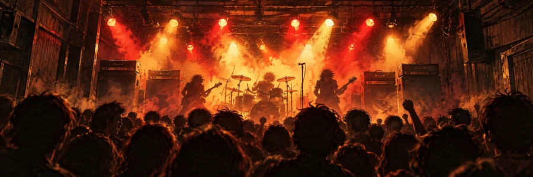

<!doctype html><html lang="ja"><head><meta charset="UTF-8"><meta name="viewport" content="width=device-width,initial-scale=1"><title>バンド野郎！ゼ — 育成</title><style>
*{box-sizing:border-box}body{margin:0;background:#29292d;color:#29292d;font:15px system-ui,sans-serif}#app{max-width:1120px;margin:auto;min-height:100vh;background:#f3f0e7}header{padding:20px;background:#202125;color:white;border-bottom:5px solid #d14336;display:flex;justify-content:space-between;align-items:center}main{padding:24px}h1{font-size:30px;line-height:1.6}p{line-height:1.9}button,input,select{font:inherit}button{min-height:46px;padding:11px 16px;border:1px solid #aca495;border-radius:5px;background:#fffaf0;cursor:pointer}button:disabled{opacity:.5;cursor:default}button:focus-visible{outline:3px solid #d14336}input,select{width:100%;padding:12px;border:1px solid #aaa;margin:6px 0;background:#fff}label{display:block;font-size:13px;font-weight:bold;margin-top:12px}.primary{background:#c83b31;color:white;border:0;font-weight:bold}.full{width:100%;margin-top:12px}.panel,.event{padding:18px;border:1px solid #c9c2b5;background:#fffdf5;border-radius:5px;margin:16px 0}.event{border-left:5px solid #c83b31}.sub{font-size:12px;line-height:1.8;color:#65635c}.flash{padding:14px;background:#fff0bd;border:1px solid #bca256;margin:14px 0;line-height:1.8}.row{display:flex;gap:10px;align-items:center;justify-content:space-between;flex-wrap:wrap}.fields,.cards{display:grid;grid-template-columns:repeat(2,minmax(0,1fr));gap:12px}.roster{display:grid;grid-template-columns:repeat(4,minmax(0,1fr));gap:8px}.member{text-align:center;padding:8px;border:1px solid #cac3b5;background:#fffbf2;min-width:0}.name{font-size:13px;font-weight:bold;overflow-wrap:anywhere}.role{color:#a23830;font-size:12px;font-weight:bold}.portrait{display:block;width:100%;max-width:95px;margin:auto}.stats{font-size:12px;line-height:1.9}.stats div{display:flex;justify-content:space-between;gap:4px}.candidate{padding:16px;border:1px solid #cbc2b2;background:#fffdf7;border-radius:5px}.current{border:2px solid #9d7d32;background:#fff6d7}.person{display:flex;align-items:center;gap:12px}.person svg{width:65px;flex-shrink:0}.person h3{margin:5px 0;overflow-wrap:anywhere}.tag{color:#a23830;font-size:12px;font-weight:bold}.nums{display:grid;grid-template-columns:repeat(4,1fr);gap:5px;margin:12px 0}.num{background:#eae8df;text-align:center;padding:8px 3px;font-size:11px}.num b{display:block;font-size:22px}.bad{background:#ffebe4;color:#aa3029}.good{background:#edf5e5;color:#2c6339}.req{font-size:12px;line-height:1.8}.train-grid{display:grid;grid-template-columns:repeat(4,1fr);gap:10px;margin:20px 0}.train-grid b{display:block;font-size:25px;margin-top:8px}.teacher{width:100%;text-align:left;line-height:1.8}.teacher b{display:block}.log{max-height:280px;overflow:auto;font-size:12px;line-height:1.9}.progress{height:7px;background:#d5cfc2;margin:16px 0}.progress i{display:block;height:100%;background:#c63a31}.setup{max-width:530px;margin:auto}.ticket{background:#f5ebff;color:#714b96}.name-row{display:flex;gap:8px}.name-row input{min-width:0;flex:1}.name-row button{flex-shrink:0}.hero{max-width:170px;margin:20px auto}footer{padding:16px;background:#e8e2d6;display:flex;justify-content:space-between;align-items:center;gap:10px}@media(max-width:580px){main{padding:16px}.cards,.fields{gap:9px}.cards{grid-template-columns:1fr}.stats{font-size:10px}.member{padding:4px}.roster{gap:4px}.train-grid{gap:5px}.train-grid button{padding:10px 3px;font-size:12px}.name{font-size:11px}header{padding:16px}}@media(min-width:1000px){.cards{grid-template-columns:repeat(3,minmax(0,1fr))}}

.compare{display:grid;grid-template-columns:minmax(0,1fr) minmax(0,1fr);gap:16px;margin-bottom:28px;align-items:start}.compare .candidate{height:100%}.compare>div{min-width:0}.browse{margin-bottom:8px}.browse span{font-size:12px}.reading{max-width:650px;margin:32px auto}.story{min-height:230px;background:#fffdf6;border:1px solid #c9c1b2;border-left:5px solid #c83b31;padding:28px;margin:18px 0}.story h1{font-size:26px;margin:8px 0 22px}.story p{font-size:18px;line-height:2.1}.effect{font-weight:bold;color:#a8382f;font-size:20px;margin-top:24px}.compare .current{border-top:5px solid #9d7d32}@media(max-width:580px){.compare{gap:8px}.compare .candidate{padding:9px}.compare .person{display:block;text-align:center}.compare .person svg{margin:auto}.compare .nums{grid-template-columns:repeat(2,1fr)}.compare .candidate h3{font-size:13px}.compare .req,.compare .candidate p{font-size:11px}.reading{margin:12px auto}.story{padding:20px;min-height:230px}.story p{font-size:16px}.compare button{font-size:12px;padding:9px 5px}.compare .num{font-size:10px}}

.training-art{display:block;width:100%;height:auto;aspect-ratio:3/1;object-fit:cover;border-radius:4px;margin:15px 0 23px;max-height:190px}.lesson-speaker{display:flex;align-items:center;gap:12px;padding:10px;background:#eee6d7;margin:10px 0 18px;font-size:13px;font-weight:bold}.lesson-speaker svg{width:58px;margin:0}.calendar-plan{background:#e9e0c8;border:1px solid #b8a478;border-left:4px solid #a73e32;padding:12px;display:grid;gap:5px;margin:17px 0;font-size:13px}.story p{white-space:normal}.reading{max-width:720px}.story{padding:24px}@media(max-width:580px){.story{padding:18px}.story h1{font-size:22px}.training-art{margin:12px 0 18px}.story p{line-height:1.95}.effect{font-size:17px}}

header>b{white-space:nowrap;font-size:19px}header>.row{justify-content:flex-end}@media(max-width:580px){header{flex-wrap:wrap;gap:10px}header>b{flex-basis:100%;font-size:20px}header>.row{width:100%;justify-content:space-between;gap:6px}header button{font-size:12px;min-height:40px;padding:8px 12px}header small{font-size:11px}}
.opening-rock{width:100%;height:auto;aspect-ratio:3/1;object-fit:cover;display:block;border-radius:5px;margin-bottom:26px}.setup{max-width:650px}
#app{min-height:0}
</style></head><body><div id="app"></div><script>
const R=['Vo','Gt','Ba','Dr'],K=['skill','looks','charisma','cooperation'],MK=K.slice(0,3),L={skill:'歌唱／演奏',looks:'ルックス',charisma:'カリスマ',cooperation:'協調性'};
const surnames=['高橋','一ノ瀬','黒田','桐谷','田村','早川','佐伯','藤堂','小野','森下','片桐','大原','三上','野崎','坂本','神崎'],given=['律','大輔','タク','ユウ','直人','誠','翔','健太','敦','浩二','リョウ','拓海','亮介','慎','圭','隆'],alias=['JIN','MASA','KAZ','RAY','SNAKE','RYU','NOB','SHIN','アッシュ','ロッキー','トミー','ゼロ','レイ'];
const root=document.getElementById('app'),rand=(a,b)=>a+Math.floor(Math.random()*(b-a+1)),pick=a=>a[rand(0,a.length-1)],esc=s=>String(s).replace(/[&<>"']/g,c=>({'&':'&amp;','<':'&lt;','>':'&gt;','"':'&quot;',"'":'&#39;'}[c])),fmt=n=>Number.isInteger(n)?String(n):n.toFixed(1);
let screen='intro',g=null,serial=0,notice='',key='skill',back='',draft={name:'',role:'Vo',face:{hair:0,color:0,shape:0,eyes:0,clothes:0,skin:0}};
function randomFace(){return {hair:rand(0,3),color:rand(0,3),shape:rand(0,2),eyes:rand(0,2),clothes:rand(0,3),skin:rand(0,3)}}
function face(m){const f=m.face,h=['#26262c','#765039','#d8b552','#a73942'][f.color],s=['#efc9a5','#d5a277','#b47b53','#82593f'][f.skin],c=['#2e3038','#48758c','#92414a','#e7e1ce'][f.clothes];const head=['<ellipse cx="50" cy="47" rx="25" ry="29"/>','<rect x="30" y="15" width="40" height="65" rx="20"/>','<rect x="25" y="22" width="50" height="55" rx="13"/>'][f.shape],hair=['<path d="M25 42Q18 10 50 10Q81 6 75 42L58 25 40 32Z"/>','<path d="M22 84V35Q20 9 50 9Q79 5 78 35V86L65 78V30L35 40V83Z"/>','<path d="M42 30L39 10 49 15 55 3 64 14 62 30Z"/>',`<path d="M28 33Q32 17 50 17Q69 17 72 33" fill="none" stroke="${h}" stroke-width="5"/>`][f.hair],eyes=['<path d="M35 45l8 2m14 0 8-2" fill="none" stroke="#29262b" stroke-width="3"/>','<ellipse cx="39" cy="46" rx="3" ry="4"/><ellipse cx="61" cy="46" rx="3" ry="4"/>','<path d="M34 47q5-5 10 0m12 0q5-5 10 0" fill="none" stroke="#29262b" stroke-width="2"/>'][f.eyes];return `<svg class="portrait" viewBox="0 0 100 110" role="img" aria-label="${esc(m.name||'主人公')}の顔"><path d="M10 110V91L34 77H66L90 91V110" fill="${c}"/><g fill="${s}" stroke="#29262b" stroke-width="1.5">${head}</g><g fill="${h}">${hair}</g><g fill="#29262b">${eyes}</g><path d="M43 59q7 6 14 0" fill="none" stroke="#29262b" stroke-width="2"/>${f.clothes===0?'<path d="M35 79l10 17 5-9 6 9 10-17" fill="none" stroke="#aaa" stroke-width="2"/>':f.clothes===1?'<path d="M50 87v23" stroke="#abc2ce" stroke-width="2"/>':f.clothes===2?'<path d="M17 98h66M36 83v27M65 83v27" stroke="#34292e" stroke-width="3"/>':''}</svg>`}
const FRIEND_NAMES=['同中 学','地元 同','隣家 友'];
function randomName(used=new Set()){let n;for(let i=0;i<100;i++){n=Math.random()<.27?pick(alias):pick(surnames)+' '+pick(given);if(!used.has(n)&&!FRIEND_NAMES.includes(n)){used.add(n);return n}}let i=1;do{n='新人 '+i++}while(used.has(n));used.add(n);return n}
function knownNames(){g.usedNames??=[];const used=new Set([...g.usedNames,g.p.name,...g.friends.map(m=>m.name),...Object.values(g.team).map(m=>m.name),...g.pool.map(m=>m.name)]);return used}
function bestTeacher(k){const ms=Object.values(g.team).filter(m=>m[k]>g.p[k]).sort((a,b)=>b[k]-a[k]||a.id-b.id);return ms[0]||null}
function graduation(m,k,before,after){if(!m||before>=m[k]||after<m[k])return '';g.graduations??=[];const id=m.id+':'+k;if(g.graduations.includes(id))return '';g.graduations.push(id);const equal=after===m[k];const words={skill:equal?'もう俺と肩を並べたな。次はお前が引っ張る番だ。':'もう俺が教えることはないな。次はお前に教わる番か。',looks:equal?'お前も、すっかり様になったな。俺もうかうかしてられねえ。':'このバンドで一番カッコいいのは、もうお前だな。',charisma:equal?'お前にも、人を惹きつけるものがある。並ばれちまったな。':'気づけば、お前の言葉に俺まで引っ張られてる。',cooperation:equal?'お前も、みんなの話を聞けるようになったな。':'お前がいたから、俺たちもまとまれたんだな。'};return '\n\n'+m.name+'：「'+words[k]+'」'}
function friendTalk(m){return ['お前、音楽の授業じゃ寝てたくせに、本気になったな。','いつもの遊びが、バンドになっちまったな。','練習、隣まで聞こえてたぞ。前よりよくなったな。'][m.friendIndex??0]}
function exchangeQuote(m,leaving=false){if(m.friend)return leaving?'バンドは抜けるけど、ダチはやめねえよ。':friendTalk(m);if(leaving)return m.cooperation<30?'俺とは目指すものが違ったな。':m.cooperation>=70?'短い間だったけど、一緒に音を出せてよかった。':'じゃあな。お互い、いい音を出そうぜ。';return m.cooperation<30?'足を引っ張るなよ。':m.cooperation>=70?'一緒にいいバンドにしようぜ。':'よろしく。まずは音を合わせよう。'}
function member(role,name){return {id:++serial,role,name,face:randomFace(),friend:false,skill:10,looks:10,charisma:10,cooperation:10}}
function lineup(){return R.map(r=>r===g.p.role?g.p:g.team[r])}
function roster(){return `<div class="roster">${lineup().map(m=>`<div class="member">${face(m)}<div class="role">${m.role}${m===g.p?'・自分':''}</div><div class="name">${esc(m.name)}</div><div class="stats">${K.map(k=>`<div><span>${k==='skill'?(m.role==='Vo'?'歌唱':'演奏'):L[k]}</span><b>${m[k]}</b></div>`).join('')}</div></div>`).join('')}</div>`}
function addLog(t){g.log.push({n:g.used,text:t})}
function generatePool(){g.browse={};const used=knownNames(),parts=R.filter(r=>r!==g.p.role);g.pool=[...g.friends];for(const group of ['elite','beginner','middle','strong','random','random','random','random','random']){const m=member(pick(parts),randomName(used));if(group==='beginner'||group==='middle')for(const k of K)m[k]=group==='beginner'?rand(20,29):rand(30,49);else if(group==='elite'||group==='strong'){let sum;do{for(const k of MK)m[k]=rand(1,100);sum=MK.reduce((s,k)=>s+m[k],0)}while(group==='elite'?sum<220:sum<180||sum>=220);m.cooperation=rand(1,100)}else for(const k of K)m[k]=rand(1,100);m.group=group;g.pool.push(m)}g.usedNames=[...used]}
function nickname(m){const sum=MK.reduce((s,k)=>s+m[k],0);if(m.friend)return Math.max(...MK.map(k=>m[k]))>=60?'隠れた才能。地元の友人':'楽器は初心者。地元の友人';if(m.skill>=85&&m.cooperation<=20)return '腕はプロ、口は最悪';if(m.looks>=85&&m.skill<=30)return '顔だけはメジャー級';if(m.charisma>=85&&m.skill<=30)return '下手なのに目が離せない';if(sum>=220)return 'え？ もしかしてプロ？';if(sum>=180)return '地元じゃ収まらない実力派';if(K.every(k=>m[k]>=20&&m[k]<30))return '初心者に毛が生えた？';if(K.every(k=>m[k]>=30&&m[k]<50))return 'そこそこ、ひと通りやれる';if(m.cooperation>=90)return '話を聞いてくれる、できた奴';return sum<80?'これから始める側の人':'合わせてみないと分からない'}
function decision(m){if(m.friend)return {ok:true,targets:[],bonus:0,rows:[]};let targets=MK.filter(k=>m[k]>=50);if(!targets.length)targets=[MK.reduce((a,k)=>m[k]>m[a]?k:a,'skill')];const bonus=g.p.cooperation/targets.length,rows=targets.map(k=>({k,total:g.p[k]+bonus,missing:Math.max(0,m[k]-g.p[k]-bonus)}));return {ok:rows.every(x=>!x.missing),targets,bonus,rows}}
function quote(m,d){if(m.friend)return '「'+friendTalk(m)+'」';if(d.ok)return '「お前となら、やれそうだ。よろしく！」';const k=d.rows.filter(x=>x.missing).sort((a,b)=>b.missing-a.missing)[0].k;return k==='skill'?'「お前のようなヘタと組めるかよ。もっと練習しな。」':k==='looks'?'「腕だけじゃない。もう少し見た目も何とかしてくれよ。」':'「お前には、まだ人を引きつけるものが足りないな。」'}
function join(id,ticket=false){const m=g.pool.find(m=>m.id===id);if(!m)return;const d=decision(m);if(!d.ok&&!ticket){notice=m.name+'：'+quote(m,d);render();return}if(ticket){if(!g.tickets||d.ok)return;g.tickets--}const old=g.team[m.role];if(old.id===m.id)return;g.team[m.role]=m;notice=(ticket?'プラチナチケットで加入。 ':'')+old.name+'：「'+exchangeQuote(old,true)+'」 ／ '+m.name+'：「'+exchangeQuote(m)+'」';addLog(`${m.role} ${old.name} → ${m.name}${ticket?'（チケット使用）':''}`);render()}
function amount(m,k){if(!m||m[k]<=g.p[k])return null;if(m[k]>=90)return 5;if(m[k]-g.p[k]>=30)return 4;return 3}
function change(m,k,n){const old=m[k];m[k]=Math.max(1,Math.min(100,old+n));return m[k]-old}
function delta(k,n){return L[k]+(n>=0?'＋':'')+n}
function advice(k){return pick({skill:['リズムはこう取るんだ。足で拍を感じてみろ。','力を抜け。まずは同じ音を安定して出そうぜ。','録音を聴いてみな。走ってる場所が分かるだろ。'],looks:['ムースは少しずつ付けるんだ。最初から付けすぎるな。','その服なら、立ち方を変えると似合うぜ。','鏡だけじゃなく、写真でも確かめてみろ。'],charisma:['客席から目をそらすな。まず一人に届けるつもりで立て。','無理に格好つけるな。自分の言葉で話せばいい。'],cooperation:['まず最後まで聞こうぜ。返す言葉はその後でいい。','相手が何を嫌がったのか、ちゃんと聞いてみろ。']}[k])}
// 未使用の文章を優先。全候補を読んだ後に一巡する。
function freshWords(group,list){g.words??={};let used=g.words[group]||[];if(used.length>=list.length)used=[];const available=list.map((_,i)=>i).filter(i=>!used.includes(i));const i=pick(available);used.push(i);g.words[group]=used;return list[i]}
const PRACTICE_WORDS={
 voice:['テープを巻き戻し、同じ一節を何度も歌った。','息の続かない場所で止め、呼吸の位置からやり直した。','小さな声で歌うと、ごまかしていた音程が聞こえた。','好きな歌手をまねた後、自分の声で歌い直した。','歌詞を声に出して読んでから、メロディーに乗せた。','最後の一音を、急がずに伸ばしてみた。','録音の声は、頭の中で聴いていた声とは違った。','苦手な高音を避けず、届く出し方を探した。','歌い出す前の一呼吸を、何度も確かめた。','言葉の終わりを投げずに、最後まで歌った。'],
 instrument:['速く弾くのをやめ、ひとつずつ音を確かめた。','メトロノームを遅くして、苦手な部分を繰り返した。','好きなレコードに合わせると、思ったより拍がずれていた。','一曲を通す前に、つまずく小節だけを練習した。','余計な力を抜くと、さっきまで出なかった音が出た。','音の出だしをそろえようと、録音を何度も聴いた。','簡単なフレーズほど、ごまかしが利かなかった。','目を閉じて、音を出す間隔を確かめた。','楽器の構えを変えて、いつもの曲を試した。','難しいところだけでなく、音を止める練習もした。'],
 looks:['鏡の前で、髪の分け目を少し変えてみた。','古着をいくつか合わせて、自分に似合う形を探した。','正面だけでなく、横からの姿も確かめた。','いつも丸まっている背中を伸ばし、立ってみた。','服のサイズを変えると、同じ格好でも印象が違った。','写真を一枚撮って、思い描いた姿と比べた。','髪を整えすぎず、少し崩してみた。','靴まで磨いてから、全身を鏡で見た。','好きなミュージシャンの服を、そのまままねずに試した。','似合わないと思っていた色を、思い切って合わせた。'],
 charisma:['誰かが見ているつもりで、部屋の真ん中に立った。','曲の前に言う一言を、自分の言葉で考えた。','大声に頼らず、最後まで聞いてもらう話し方を試した。','視線を床から上げ、顔を見て話す練習をした。','好きなライブ映像を止めて、立ち姿を研究した。','沈黙を急いで埋めず、一拍待ってから話した。','照れ笑いで終わらせず、言い切ってみた。','同じ言葉を、声の強さを変えて何度も言った。','小さくまとまる癖をやめ、胸を張ってみた。','うまい台詞より、今伝えたいことを探した。'],
 cooperation:['自分ならどう答えるか考える前に、相手の話を聞いた。','意見が違う理由を、言い争いになる前に尋ねた。','伝えそびれていたことを、短い言葉で話してみた。','返事を待つ間、勝手に相手の気持ちを決めつけなかった。','頼むことと、押しつけることの違いを考えた。','自分が譲れるところを、ひとつ探した。','冗談でごまかさず、嫌だったことを伝えてみた。','仲間の立場から、同じ出来事を考えてみた。','先に謝ることが、負けることではないと考えた。','相手が話しやすい聞き方を、少し変えてみた。']
};
const ADVICE_WORDS={
 voice:['声を張る前に、息をどこで使うか考えてみろ。','高い音だけ追うな。低いところの言葉も聴かせるんだ。','歌い出しを急がず、先に拍を体に入れよう。','歌詞を覚えるだけじゃない。何を言ってるのか考えようぜ。','一息で全部歌おうとしなくていい。呼吸も歌の一部だ。','録音を聴こう。自分では出ているつもりの音があるだろ。','伴奏が小さくなっても、あわてて声を足すな。','声の大きさより、言葉の輪郭をはっきりさせてみな。','最後の音を投げるな。そこまでがお前の歌だ。','まねてみるのはいい。でも、最後は自分の声で歌ってみろ。'],
 instrument:['リズムはこう取るんだ。指より先に、体で拍を覚えよう。','速くできるところで走るな。苦手なところも同じ速さで。','力を抜け。楽器を押さえつければいいわけじゃない。','ここで音を止めてみな。鳴らさない時間も曲なんだ。','一小節だけ録って、繰り返し聴いてみようぜ。','難しいフレーズより、同じ音を安定して出してみろ。','手元ばかり見るな。ほかの音も聴きながらやるんだ。','今の音、出だしが少し遅い。もう一度合わせてみよう。','できない場所は、ゆっくりならできるところまで戻そう。','勢いだけで通すな。どこでずれたか、一緒に探そうぜ。'],
 looks:['ムースは少しずつ付けるんだ。最初から付けすぎるな。','高い服じゃなくてもいい。まずサイズを合わせようぜ。','髪だけじゃない。襟と靴も見てみろ。','その服なら、背中を伸ばして立つと似合うと思う。','鏡だと見落とすことがある。写真でも確かめてみな。','全部まねるより、似合う部分だけ取り入れてみろ。','その色は悪くない。ほかを少し落ち着かせてみよう。','目立つ服を着るなら、着られてる顔をするなよ。','横からの形も見てみよう。正面だけで決めるな。','髪をいじりすぎるな。少し残したほうが、お前らしい。'],
 charisma:['客席から目をそらすな。まず一人に届けるつもりで立て。','無理に格好つけるな。自分の言葉で話せばいい。','曲に入る前の間も、お前のステージだ。','照れたら笑ってもいい。でも、言いたいことまで引っ込めるな。','大声を出すだけじゃない。小さく話して、耳を向けさせてみろ。','手をどこに置くか迷うなら、まず余計に動かさないでみな。','誰かの決め台詞より、お前自身の一言を聞きたいんだ。','言い終わったら、少し待ってみろ。返ってくるものがある。','うまく見せることより、その場から逃げないことだ。','目の前に誰がいるか見ようぜ。空中へ話すな。'],
 cooperation:['まず最後まで聞こうぜ。返す言葉は、その後でいい。','相手が何を嫌がったのか、ちゃんと聞いてみろ。','自分の意見を言う前に、相手の理由も確かめよう。','何も言わない奴が、何も考えてないとは限らない。','譲るところと譲れないところを、分けて話そうぜ。','頼むなら、相手が断れる言い方も残しておこう。','その冗談、相手も笑ってたか。一度考えてみな。','分かったつもりで終わるな。どう思ったか聞いてみよう。','謝るなら、何に謝ってるかも言おうぜ。','急いで結論を出す前に、もう一人の話も聞こう。']
};
function lessonText(m,k,helped){const musical=k==='skill'?(g.p.role==='Vo'?'voice':'instrument'):k;
 const start=m?`${m.name}と、向き合って練習した。`:'今日は、一人で練習した。';
 const ends=helped?['言われたとおりに試すと、さっきまで分からなかった違いが聞こえた。','一度でできたわけではない。それでも、やり直す場所が分かった。','ただまねるだけでなく、自分でも確かめながら繰り返した。','見ているだけの時とは違う。やってみて初めて、意味が分かった。','いつも引っかかっていたところに、少し手応えがあった。','帰る前にもう一度試した。教わった感覚を、忘れたくなかった。']:['今日は大きく変わった感じはしない。それでも、繰り返した時間は残った。','できたつもりにならず、最後にもう一度確かめた。','少しずつでいい。昨日より、分かることを増やしていこう。','休みながら、同じことを何度か試した。','録音と鏡だけでは分からないこともある。いつか、誰かに聞いてみたい。','うまくいったところを覚えて、今日は練習を終えた。'];
 const cores=helped?ADVICE_WORDS[musical].map(t=>`${m.name}：「${t}」`):m?['「俺に聞かれても……。その辺は、俺もまだ分からないんだ。」','「俺もできてないな。一緒に試してみるか。」','「うまいやり方は教えられないけど、付き合うよ。」','「すまん。そこは、お前に教えられるほど分かってない。」'].flatMap(t=>PRACTICE_WORDS[musical].slice(0,5).map(p=>`${m.name}：${t}\n${p}`)):PRACTICE_WORDS[musical];
 return freshWords('lesson-'+musical+'-'+(helped?'teacher':m?'peer':'alone'),cores.flatMap(t=>ends.map(end=>start+'\n\n'+t+'\n\n'+end)));
}
const EVENT_WORDS={
 skill:{up:['楽器店で立ち止まり、店員の実演をじっと見た。帰ってから、聞いたリズムを試した。','ラジオの一曲に耳を奪われた。何が違うのか考えながら、何度も口ずさんだ。','友人が貸してくれたテープを聴いた。自分たちにはない音の置き方があった。','帰りの電車で、今日のフレーズが頭から離れなかった。家に着く頃、苦手だったところの感覚がつながった。','ライブハウスで、前のほうの客に混ざって演奏を見た。指だけでなく、体の動きに目が行った。','古い雑誌の奏者インタビューを読んだ。試してみたくなる言葉が、一行あった。','自分の録音を友人に聴かせた。何気ない指摘で、ずっと見落としていた癖に気づいた。','道端から聞こえた音に、思わず足で拍を取った。いつもとは違うリズムだった。'],down:['練習のあと、別のやり方を試して混乱した。いつもの感覚まで少しつかめなくなった。','好きな奏者と自分を比べすぎた。音を出すたびに、身構えてしまった。','慣れた部分を勢いで済ませた。録音を聴くと、雑になっていた。','頭の中の音を追いすぎて、実際に出している音を聴けなくなった。','苦手なところを避けたまま通した。癖が、また少し強くなっていた。']},
 looks:{up:['帰り道、古着屋に寄った。店員に勧められたジャケットが、意外によく似合った。','友人が撮った写真を見た。自分に合う角度と、立ち方が少し分かった。','散髪に行った。いつもと少し違う整え方を教えてもらった。','借りた雑誌の写真に目が留まった。服そのものより、着こなしをまねしてみた。','知り合いに「その色、似合うな」と言われた。自分では選ばなかった色だった。','古い服を組み合わせ直した。買い足すより、すっきりした姿になった。','店のガラスに映った自分を見て、背中を伸ばした。そのほうが服がきれいに見えた。','靴を手入れした。地味なことなのに、全身の印象が変わった。'],down:['勢いで髪をいじりすぎた。本人も、鏡を見るたび落ち着かない。','目立つ服を借りたが、どう着ればいいか分からなかった。','自分に似合うか考えず、好きな人の格好を丸ごとまねしてしまった。','写真を見て、妙に身構える癖に気づいた。今日は自然に立てない。','見た目を気にしすぎて、かえっていつもの表情が出なくなった。']},
 charisma:{up:['友人の集まりで音楽の話をした。気づくと、みんながこちらを向いて聞いていた。','言いたかったことを、照れずに言い切れた。返ってきた言葉が、少し自信になった。','地元の店で、知らない人と話した。気負わず話したほうが、相手も楽しそうだった。','ライブの客席で、演者が何も言わずに場を動かす瞬間を見た。あの間を覚えておこう。','うまい言葉が出ず、正直に話した。それが、相手には一番伝わったようだった。','後輩に音楽を勧めた。翌日「聴いたよ」と言われ、もう少し話したくなった。','人前で聞かれたことに、自分の言葉で答えた。声は少し震えたが、最後まで話せた。','仲間の前で、いつかやりたいライブの話をした。笑われると思ったのに、真剣に聞いてくれた。'],down:['誰かの決め台詞をまねして、場が静かになった。自分の言葉ではなかった。','注目されたい気持ちが先に出て、相手の反応が見えなくなった。','話す前から失敗を気にした。言いたかったことを、途中で引っ込めた。','大きなことを言った後、急に恥ずかしくなった。視線が床へ落ちた。','格好つけた言い方をしてしまい、いつもの友人との会話までぎこちなくなった。']},
 cooperation:{up:['帰り道、友人の悩みを聞いた。すぐ答えずに聞いていると、本当に困っていたことが分かった。','小さなすれ違いを、今日のうちに話した。思っていたほど、相手は怒っていなかった。','借りたものを返し、きちんと礼を言った。短いことでも、言葉にする意味があった。','予定が合わない仲間と相談した。自分の都合だけで決めなくてよかった。','黙っていた友人に意見を聞いた。考えていなかったわけではなく、言う間がなかったらしい。','先に自分の非を認めた。言い合いになるはずの話が、そこで少しほどけた。','仲間が手伝ってくれた理由を聞いた。当たり前だと思っていたことを、見直した。','意見が違うまま、相手を否定せずに話せた。全部一致しなくても、一緒にやれる。'],down:['冗談のつもりだった。相手が笑っていないことに、後から気づいた。','返事を急かしてしまった。相手にも事情があると、あとで分かった。','聞いたつもりで、自分の意見ばかり話していた。帰り道が少し気まずかった。','面倒な話を避けた。解決していないことだけが、仲間との間に残った。','相手の言葉を悪いほうへ受け取ってしまった。確かめる前に、言い返した。']}
};
const QUIET_EVENTS=['練習のあと、友人の部屋でレコードを聴いた。誰も上手いことは言わない。ただ、同じところで音を大きくした。','帰りの電車で、ケースを抱えて座った。窓に映る自分は、まだバンドマンというほどでもない。','雑誌の募集欄を眺めた。妙に強気なハガキと、短い素朴なハガキが並んでいた。','ライブハウスの前を通った。扉の向こうから、低い音と笑い声が漏れていた。','仲間とコンビニの前で話した。音楽の話だったはずが、いつの間にか学校の愚痴になった。','家でテープを整理した。ラベルのない一本をかけると、昔よく聴いた曲が流れた。','帰り道、友人に「続いてるな」と言われた。まだ始めたばかりなのに、少しうれしかった。','練習室に忘れ物を取りに戻った。誰もいない部屋は、さっきよりずっと広く感じた。','部屋の壁に、好きなバンドの切り抜きを貼った。目が合うたび、また練習したくなる。','音楽雑誌の発売日だった。買って帰り、袋を開ける前に少しだけ机を片づけた。','友人が、いつかやりたいバンド名をいくつも挙げた。ひどい名前ばかりで、全員が笑った。','いつもの店で、いつもの飲み物を買った。変わらない帰り道に、今日の音だけが残っていた。'];
function eventDraw(){const e=baseEventDraw(),kind=e.kind,k=e.target;let lines;
 if(kind==='quiet'){e.title='いつもの帰り道';e.text=freshWords('quiet',QUIET_EVENTS);return e}
 if(kind==='ticket'){e.title='一枚の、特別な紹介状';lines=['知り合いの音楽関係者に、熱意を話した。「それなら、一人だけ紹介しよう」。特別な紹介状を渡された。','楽器店の店主が、話を聞いてくれた。「こいつを持って頼んでみな。一人だけなら、話をつないでやる」。','ライブの片づけを手伝った。帰りにスタッフから、一枚のチケットを渡された。「どうしても組みたい奴がいる時に使いな」。'];e.text=freshWords(kind,lines)+'\n\nプラチナチケットを1枚獲得。能力差に関係なく、一人だけ誘える。';return e}
 if(kind==='friends'){e.title='3人の音が、変わった日';lines=['仲間3人が、知り合いの先輩に呼ばれた。戻ってきて音を合わせると、いつもと違う手応えがあった。','自分がいない間に、3人がまとめて講習へ行っていた。音も立ち姿も、前よりずっとしっかりしている。','3人だけで挑んだ練習が、思いがけず大きなきっかけになった。話を聞く顔も、以前とは違っていた。'];e.text=freshWords(kind,lines)+'\n\n今いる仲間3人の全能力が上昇。自分の能力は変わらない。';return e}
 if(kind==='all'){e.title='始めてよかった';lines=['好きなバンドのライブへ行った。音を聴き、姿を見て、言葉を受け取った。帰りは仲間と、いつまでも話した。','昔の知り合いに近況を話した。音楽を始めてから、自分が少しずつ変わっていることに気づいた。','仲間と初めての場所へ出かけた。何もかも少し緊張したが、帰る頃には、また行こうと話していた。'];e.text=freshWords(kind,lines);return e}
 if(kind==='trade'){e.title='夢中になった、その裏で';lines=['一つのことが分かると、そこばかり試したくなった。ほかのことを後回しにした分、少し足元が乱れた。','今日は思い切って、自分のやり方を変えた。得たものもある。ただ、前にできていたことへ気が回らなかった。','仲間に褒められたところが、うれしかった。気をよくしている間に、別の癖を見落としていた。','ずっと越えたかった壁に、ようやく手が届いた。夢中になりすぎて、ほかのことは雑になっていた。'];e.text=freshWords(kind,lines);return e}
 const negative=kind.startsWith('down');e.title=negative?'少し、つまずいた日':kind==='up4'?'思いがけない突破口':kind==='up3'?'ふと、つながった':'帰り道の、小さな変化';
 const endings=negative?['今日は引きずらず、明日また確かめよう。','それでも、やめるつもりはなかった。','仲間に言われて、ようやく自分でも気づいた。','思い通りにはいかない。これも、始めてから分かったことだ。','次に試す時は、少し落ち着いてやってみよう。']:['すぐに大きなことができるわけではない。それでも、覚えておきたい感覚だった。','誰かに見せる前に、もう一度、自分で確かめた。','今日の練習とは違うところで、少し前へ進んだ。','何気ないことだったが、帰ってからも頭に残っていた。','次に仲間と会ったら、試してみよう。'];
 e.text=freshWords('event-'+kind+'-'+k,EVENT_WORDS[k][negative?'down':'up'].flatMap(t=>endings.map(end=>t+'\n\n'+end)));return e;
}

function baseEventDraw(){const r=Math.random()*100;let ds=[],title='練習のあとに',text='日々の中で、小さな気づきがあった。';if(r<55)ds=[[pick(K),1]];else if(r<65)ds=[[pick(K),2]];else if(r<75){const up=pick(K);ds=[[up,3],[pick(K.filter(k=>k!==up)),-1]];text='ひとつに夢中になった。別のところには、気が回らなかった。'}else if(r<80){ds=[[pick(K),-1]];text='うまくいかない日。少し自信をなくした。'}else if(r<85){ds=[[pick(K),3]];text='思いがけない転機が訪れた。'}else if(r<95)text=pick(['仲間とレコードを聴いた。今日は、ただ楽しかった。','帰り道、ライブハウスの看板に足を止めた。いつか俺たちも。','雑誌の募集欄を眺めた。次は誰が来るだろう。']);else if(r<96){ds=[[pick(K),-2]];text='張り切りすぎて、少し調子を崩した。'}else if(r<97){ds=[[pick(K),-3]];text='思うようにいかない。少しずつ立て直そう。'}else if(r<98){ds=[[pick(K),4]];text='誰かの一言で、長く分からなかったことがつながった。'}else if(r<99){ds=K.map(k=>[k,1]);text='音楽を始めてよかった。今日は全部が少し前に進んだ。'}else if(r<99.5){g.tickets++;title='プラチナチケットを手に入れた！';text='能力差に関係なく、一人だけ仲間にできる。使う相手は自分で決めよう。'}else{title='仲間3人に、大きな転機！';text='現在の仲間3人の全能力＋10。上限100。主人公は変わらない。';for(const m of Object.values(g.team))for(const k of K)change(m,k,10)}return {title,text,kind:r<55?'up1':r<65?'up2':r<75?'trade':r<80?'down1':r<85?'up3':r<95?'quiet':r<96?'down2':r<97?'down3':r<98?'up4':r<99?'all':r<99.5?'ticket':'friends',target:ds[0]?.[0],effect:ds.map(([k,n])=>delta(k,change(g.p,k,n))).join(' ／ ')||(r<95?'数値変動なし':'')}}
function practice(){if(g.used>=60)return;const m=bestTeacher(key),before=g.p[key],helped=Boolean(m),raw=amount(m,key)??(Math.random()<.9?2:3),n=typeof trainingGrowth==='function'?trainingGrowth(raw,key):raw,gain=change(g.p,key,n);const praise=graduation(m,key,before,g.p[key]);g.used++;g.training++;const text=lessonText(m,key,helped)+(m&&m.friend?'\n\n'+m.name+'：「'+friendTalk(m)+'」':'')+praise;const event=eventDraw();g.last={title:delta(key,gain),text,event,key,teacher:m?{name:m.name,role:m.role,face:{...m.face}}:null};addLog(g.last.title+(m?'（'+m.name+'に教わった）':'（一人）')+praise+'。'+event.title+' '+event.effect);screen='practiceResult';notice=g.used===60?'60行動終了。最後にもう一度、無料で募集できる。':'';render();window.scrollTo(0,0)}
function baseRecruit(){if(g.used>=60)return;g.used++;g.recruits++;generatePool();screen='recruit';notice='募集で1行動を使用。新しい9人が応募。イベントはなし。';addLog('募集。新しい9人を確認。');render();window.scrollTo(0,0)}
function baseFinalRecruit(){if(g.used!==60||g.finalDrawn)return;g.finalDrawn=true;generatePool();screen='final';notice='最終募集。無料・1回だけ。今の仲間を残すこともできる。';addLog('最後の募集。');render();window.scrollTo(0,0)}
function start(){if(!draft.name.trim()){notice='自分の名前を入れてくれ。';render();return}const me=member(draft.role,draft.name.trim());me.face={...draft.face};g={p:me,friends:[],team:{},pool:[],used:1,training:0,recruits:1,tickets:0,log:[],last:null,finalDrawn:false,bandname:'',friendBonus:false};g.genius=Math.random()<.01;g.giftedFriends=Math.random()<.01;g.startRollDone=true;if(g.genius)for(const k of K)me[k]=35;const used=new Set([me.name,...FRIEND_NAMES]),sp=[...MK];for(let i=2;i>0;i--){const j=rand(0,i);[sp[i],sp[j]]=[sp[j],sp[i]]}R.filter(r=>r!==me.role).forEach((r,i)=>{let name=FRIEND_NAMES[i];if(name===me.name){let n=2;while(used.has(name+' '+n))n++;name+=' '+n}used.add(name);const m=member(r,name);m.friend=true;m.friendIndex=i;m[sp[i]]=g.giftedFriends?60:20;g.friends.push(m);g.team[r]=m});g.usedNames=[...used];generatePool();screen=g.genius||g.giftedFriends?'rareStart':'welcome';g.guide=0;g.firstRecruit=true;notice='' ;addLog('17歳、最初の募集。');render();window.scrollTo(0,0)}
function randomBand(){return Math.random()<.25?pick(['THE','BLACK','VELVET','MIDNIGHT'])+' '+pick(['HOWL','RADIO','NOISE','STARS']):pick(['東京','真夜中の','錆びた','銀色の','爆音','放課後の','月光'])+pick(['ノイズ','天使','ロケット','流星','少年団','ブルース','反逆者'])}

// BGM stays outside rendering and alternates only when a track ends.
const rehearsalTracks=["audio/bgm-training-1.mp3", "audio/bgm-training-2.mp3"];
const rehearsalAudio=new Audio();rehearsalAudio.preload='none';rehearsalAudio.volume=.35;
let rehearsalIndex=0,rehearsalEnabled=true,rehearsalStarted=false;
function rehearsalPlay(){if(!rehearsalEnabled||document.hidden)return;if(!rehearsalAudio.src)rehearsalAudio.src=rehearsalTracks[rehearsalIndex];rehearsalStarted=true;const result=rehearsalAudio.play();if(result?.catch)result.catch(()=>{rehearsalStarted=false;});}
function rehearsalControls(){return `<button data-a="bgm" aria-pressed="${rehearsalEnabled}" style="font-size:12px">BGM ${rehearsalEnabled?'ON':'OFF'}</button>`;}
rehearsalAudio.addEventListener('ended',()=>{rehearsalIndex=(rehearsalIndex+1)%rehearsalTracks.length;rehearsalAudio.src=rehearsalTracks[rehearsalIndex];rehearsalPlay();});
document.addEventListener('visibilitychange',()=>{if(document.hidden)rehearsalAudio.pause();else if(rehearsalStarted)rehearsalPlay();});
root.addEventListener('click',e=>{const b=e.target.closest('[data-a]');if(!b)return;if(b.dataset.a==='bgm'){rehearsalEnabled=!rehearsalEnabled;if(rehearsalEnabled)rehearsalPlay();else rehearsalAudio.pause();render();}else if(rehearsalEnabled&&(!rehearsalStarted||rehearsalAudio.paused))rehearsalPlay();});

function shell(html,footer=''){root.innerHTML=`<header><b>バンド野郎！<span style="color:#e65547">ゼ</span></b><div class="row"><small>17 YEARS OLD</small><button data-a="title">タイトル</button>${rehearsalControls()}<button data-a="fullscreen">全画面</button></div></header><main>${html}</main>${footer?'<footer>'+footer+'</footer>':''}`}
function lastEvent(){const x=g.last;return x?`<article class="event"><b class="gain">${esc(x.title)}</b><p>${esc(x.text)}</p><hr><b>${esc(x.event.title)}</b><p>${esc(x.event.text)}</p><div class="gain">${esc(x.event.effect)}</div></article>`:''}
function comparisonCard(m,r,current=false){const d=decision(m);return `<article class="candidate ${current?'current':''}"><div class="person">${face(m)}<div><small>${current?'今の仲間':m.friend?'地元の友人':'新しい応募者'}</small><h3>${esc(m.name)}</h3><div class="tag">${esc(nickname(m))}</div></div></div><div class="nums">${K.map(k=>`<div class="num ${!current&&d.targets.includes(k)?g.p[k]+d.bonus>=m[k]?'good':'bad':''}">${k==='skill'?(r==='Vo'?'歌唱':'演奏'):L[k]}${!current&&d.targets.includes(k)?' ★':''}<b>${m[k]}</b></div>`).join('')}</div>${current?'<p class="sub">この仲間を残すこともできる。</p>':`<div class="req">${m.friend?'無条件で、一緒にやってくれる。':d.rows.map(x=>`${L[x.k]}：自分${g.p[x.k]}＋補助${fmt(d.bonus)}＝${fmt(x.total)} ／ 相手${m[x.k]} ${x.missing?'→ '+fmt(x.missing)+'不足':'✓'}`).join('<br>')}</div><p>${esc(quote(m,d))}</p><button class="${d.ok?'primary':''} full" data-a="join" data-id="${m.id}">${d.ok?'この人を誘う':'声をかけてみる'}</button>${!d.ok&&g.tickets?`<button class="ticket full" data-a="ticketAsk" data-id="${m.id}">チケットを使って誘う</button>`:''}`}</article>`}
function candidates(){g.browse??={};return R.filter(r=>r!==g.p.role).map(r=>{const ms=g.pool.filter(m=>m.role===r&&m.id!==g.team[r].id);const i=Math.min(g.browse[r]||0,Math.max(0,ms.length-1));g.browse[r]=i;return `<h3>${r} — 今の仲間と比べて選ぶ</h3><div class="compare"><div>${comparisonCard(g.team[r],r,true)}</div><div>${ms.length?`<div class="row browse"><button data-a="browse" data-role="${r}" data-step="-1" ${i===0?'disabled':''}>←</button><span>${i+1}／${ms.length}人</span><button data-a="browse" data-role="${r}" data-step="1" ${i===ms.length-1?'disabled':''}>→</button></div>${comparisonCard(ms[i],r)}`:'<div class="panel">ほかの応募者はいない。</div>'}</div></div>`}).join('')}
function baseRender(){
if(screen==='intro'){shell(`<div class="setup"><h1>俺は、ロックに<br>やられてしまった。<br><br>やるしかないんだ。<br>ロックを！</h1><button class="primary full" data-a="setup">バンドをやる</button></div>`);return}
if(screen==='setup'){shell(`<div class="setup"><h1>俺の名前は。</h1><div class="name-row"><input id="myname" maxlength="24" placeholder="自分の名前" value="${esc(draft.name)}"><button data-a="randomName">ランダム</button></div><div class="hero" id="face-preview">${face(draft)}</div><div class="fields">${[['hair','俺の髪型は',['普通','ロンゲ','モヒカン','坊主']],['color','俺の髪色は',['黒','茶','金','赤']],['shape','俺の顔の形は',['丸顔','面長','四角']],['eyes','俺の目は',['シャープ','ぱっちり','糸目']],['clothes','俺の服は',['革ジャン','Gジャン','パンク風','ランニング']],['skin','俺の肌色は',['明るめ','標準','褐色','濃いめ']]].map(([k,t,opts])=>`<div><label>${t}</label><select data-face="${k}">${opts.map((v,i)=>`<option value="${i}" ${draft.face[k]===i?'selected':''}>${v}</option>`).join('')}</select></div>`).join('')}</div><label>俺の担当は</label><select id="part">${R.map(r=>`<option ${draft.role===r?'selected':''}>${r}</option>`).join('')}</select>${notice?'<div class="flash">'+esc(notice)+'</div>':''}<p class="sub">最初の募集から、地元の友人3人と音を出してみよう。</p><button class="primary full" data-a="start">一緒に音楽をやってくれる奴を探そう</button></div>`);return}
if(screen==='restartAsk'){shell('<div class="panel"><h2>今の進行を捨ててやり直す？</h2><button class="primary" data-a="restart">やり直す</button> <button data-a="back">戻る</button></div>');return}
if(screen==='ticketAsk'){const m=g.pool.find(m=>m.id===g.ticketId);shell(`<div class="panel"><h2>チケットを1枚使って誘う？</h2>${face(m)}<h3>${esc(m.name)} / ${m.role}</h3><p>現在の${m.role}と交代します。</p><button class="primary" data-a="ticketYes">1枚使う</button> <button data-a="back">使わず戻る</button></div>`);return}
if(screen==='confirm'){shell(`<h1>このメンバーで<br>バンドを始めますか？</h1>${roster()}<p class="sub">選び直しても最終募集の応募者は変わりません。</p><button class="primary full" data-a="confirmYes">この4人で始める</button><button class="full" data-a="backFinal">メンバーを考え直す</button>`);return}
if(screen==='name'){shell(`<h1>俺達の名前を決めよう。</h1>${roster()}${g.friendBonus?'<div class="flash"><b>結局、地元の4人で始める。</b><br>全員の協調性が100になった。腕も華も、これからだ。</div>':''}<label>バンド名</label><div class="name-row"><input id="bandname" maxlength="30" placeholder="バンド名" value="${esc(g.bandname)}"><button data-a="randomBand">ランダム</button></div>${notice?'<div class="flash">'+esc(notice)+'</div>':''}<button class="primary full" data-a="announce">この名で始める</button>`);return}
if(screen==='result'){shell(`<h1>俺達は、<br>${esc(g.bandname)}だ。</h1>${roster()}<div class="panel"><b>18歳、アマチュアバンド結成。</b><p>この4人で、ライブハウスから始める。</p><p>育成 ${g.training}回 ／ 通常募集 ${g.recruits}回＋最終募集1回</p></div><details><summary>1年間の記録</summary><div class="log">${g.log.map(x=>`${x.n}／60　${esc(x.text)}`).join('<br>')}</div></details><button class="primary full" data-a="launchBand">最初のライブへ</button>`);return}
const done=g.used===60;let html=`<div class="row"><h2>${trainingDate()}${done?'・準備終了':''}</h2><b>残り ${60-g.used}行動</b></div><div class="progress"><i style="width:${g.used/60*100}%"></i></div>${roster()}<div class="row sub"><p>育成 ${g.training}回 ／ 募集 ${g.recruits}回</p><p>プラチナチケット ${g.tickets}枚</p></div>${notice?'<div class="flash" role="status">'+esc(notice)+'</div>':''}`;
if(screen==='recruit'||screen==='final'){html+=`<h2>${screen==='final'?'最後の募集':'応募者12人'}</h2><p class="sub">★は加入判定の対象。50以上の全項目へ協調性を分配。50以上がなければ最高の1項目。赤は不足、緑は達成。指名・交換に追加行動は不要。</p>${candidates()}`;html+=screen==='final'?'<button class="primary full" data-a="confirm">このメンバーで進む</button>':done?'<button class="primary full" data-a="final">最終募集へ — 無料・1回だけ</button>':'<button class="primary full" data-a="closeRecruit">この仲間と練習を始める</button><button class="full" data-a="recruit">もう一度、募集をかける — 1行動</button>'}
else if(screen==='teacher'){const m=bestTeacher(key);html+=`<h2>${L[key]}を磨こう。</h2><div class="panel">${m?`<div class="person">${face(m)}<div><b>${esc(m.name)}に教わろう。</b><p>仲間で一番得意なのは${esc(m.name)}だ。今日は、そのやり方を教えてもらう。</p></div></div>`:`<p>この4人では、もう俺が一番${key==='skill'?'うまい':key==='looks'?'様になっている':key==='charisma'?'人を惹きつける':'みんなとうまくやれている'}。今日は一人で練習だ。</p>`}</div><button class="primary full" data-a="practice">${m?'教わりながら練習する':'一人で練習する'}</button><button class="full" data-a="training">練習項目を選び直す</button>`}
else{html+=done?'<button class="primary full" data-a="final">最後に仲間を募集する — 無料・1回だけ</button>':`${nextPlan()}<h2>仲間と、腕を磨こう。</h2><div class="train-grid">${K.map(k=>`<button data-a="choose" data-key="${k}">${{skill:g.p.role==='Vo'?'歌を練習する':'楽器を練習する',looks:'身だしなみを磨く',charisma:'魅せ方を学ぶ',cooperation:'付き合い方を学ぶ'}[k]}<b>${g.p[k]}</b></button>`).join('')}</div><button class="full" data-a="recruit">仲間を募集する — 1行動</button>`}
html+=`<details class="sub" style="margin-top:22px"><summary>行動記録</summary><p>能力は1〜100。通常は主人公だけ成長。例外のレアイベントで現在の仲間3人の全能力＋10。最終募集は60行動後に1回だけ。</p><div class="log">${g.log.slice().reverse().map(x=>`${x.n}／60　${esc(x.text)}`).join('<br>')}</div></details>`;shell(html,`<span>${trainingDate()}・${g.used}／60行動${screen==='final'?'・最終募集':''}</span><button data-a="restartAsk">やり直す</button>`)}

const rehearsalGuides=[
 {title:'募集をかけた。',text:'プロを目指すなら、うまい奴、華のある奴、人を惹きつける奴と組みたい。地元のダチと楽しくやるのも悪くないけどな。\n\n音楽雑誌に、メンバー募集のハガキを送った。\n地元の友人3人と、知らない9人から返事が来た。',button:'集まった奴らに会おう'},
 {title:'「一緒にやろうぜ」',text:'地元の友人たちが、そう言ってくれた。\n楽器は始めたばかり。それぞれ、少しだけ得意なことがある。\n最初は、この3人と音を出してみよう。',button:'ほかの応募者は、どうだ？'},
 {title:'まだ、相手にされない。',text:'腕も見た目も、俺よりずっと上の奴がいる。\nそんな奴には、断られることもある。\n自分の力と、人と付き合う力を磨けば、組める奴も増えるはずだ。\n\n※相手が重視する能力が足りないと、誘いを断られることがあります。ただし、協調性が高ければ、実力差があっても「こいつとならやってみたい」と思ってもらえるかもしれません。',button:'誰と始めるか、選ぼう'}
];
function readingScene(label,title,text,button,action,effect=''){shell(`<div class="reading"><div class="sub">${['scheduled','beforeFixed'].includes(screen)?g.scheduleScene.date:trainingDate()} · ${label}</div><article class="story"><h1>${esc(title)}</h1>${['scheduled','beforeFixed'].includes(screen)?trainingIllustration(g.scheduleScene.art,title):screen==='practiceResult'?trainingIllustration(({skill:'rehearsal',looks:'mirror',charisma:'first',cooperation:'conversation'})[g.last.key],'練習のイメージ'):''}${screen==='practiceResult'&&g.last.teacher?`<div class="lesson-speaker">${face(g.last.teacher)}<span>${esc(g.last.teacher.role+' / '+g.last.teacher.name)}</span></div>`:''}<p>${esc(text).replace(/\n/g,'<br>')}</p>${effect?`<div class="effect">${esc(effect)}</div>`:''}</article><button class="primary full" data-a="${action}">${button}</button></div>`)}
function render(){
 if(screen==='rareStart'){const text=(g.genius?'初めてなのに、音が分かる。鏡の前でも、自然と様になる。\n……俺、もしかして天才なんじゃねえか？\n\n全能力35で、バンド人生が始まる。':'')+(g.genius&&g.giftedFriends?'\n\n':'')+(g.giftedFriends?'地元の3人と音を出して、思わず顔を見合わせた。\n「お前ら、いつの間にそんなことできるようになったんだよ！」\n「お前が知らなかっただけだろ。バンド、やろうぜ。」\n\n3人それぞれの得意な能力は60。どれだけ実力差があっても、一緒にやってくれる。':'');readingScene('思いがけない始まり',g.genius?'俺に、才能がある？':'ダチの、知らなかった顔。',text,'この俺たちで、始めよう','rareNext');return}

 if(screen==='beforeFixed'){const d=g.pendingFixed;const scenes={live:['ついに、友人のイベントの日がやってきた。','練習したことを、人前で試す。\n胸が少し速く鳴っている。\n……やるぞ。','ステージに立つ'],photo:['ついに、写真を撮る日がやってきた。','先輩がカメラを用意して待っている。\n今の4人で、どんな一枚になるだろう。\n顔を上げて、行こう。','撮影に向かう'],pta:['ついに、集会の日がやってきた。','ロックは危険だと、決めつけられたくない。\n言いたいことを、自分の言葉で届けよう。\n……行ってやる。','集会へ行く'],video:['ついに、スタジオを借りた日がやってきた。','先輩の8ミリビデオを三脚に置いた。\nこの一年、4人でやってきたことを残す。\n準備はいいか。始めよう。','カメラを回す']};const x=scenes[d.kind];g.scheduleScene={...d,date:`${d.month}月 1／5週`};readingScene('本番を迎えて',x[0],x[1],x[2],'stepFixed');return}
 if(screen==='scheduled'){const e=g.scheduleScene;readingScene(e.kind==='announce'?'これからの予定':'節目の出来事',e.title,e.text,e.kind==='announce'?'その日までに、準備しよう':'この経験を胸に、次へ','scheduleNext',e.effect);return}
 if(screen==='welcome'){const x={...rehearsalGuides[g.guide]};if(g.guide===1&&g.giftedFriends)x.text='地元の友人たちが、そう言ってくれた。\nそれぞれに、知らなかった才能がある。\n頼もしい3人と、まずは音を出してみよう。';readingScene('最初の出会い',x.title,x.text,x.button,'guideNext');return}
 if(screen==='learnIntro'){readingScene('最初の練習','まずは、仲間と練習だ。','歌や楽器、身だしなみ、ステージでの魅せ方、人との付き合い方。\n練習したいことを選ぼう。\n自分より得意な仲間がいれば、一番得意な奴が先生になってくれる。\n自分が一番なら、一人で腕を磨こう。\n練習と、その後の出来事までで1行動だ。','練習することを決めよう','learnNext');return}
 if(screen==='practiceResult'){readingScene('練習の結果','今日の練習。',g.last.text,'練習を終える','showEvent',g.last.title);return}
 if(screen==='afterPractice'){const e=g.last.event;readingScene('その後の出来事',e.title,e.text,'次の活動へ','activityNext',e.effect);return}
 baseRender();
}
root.addEventListener('click',e=>{const b=e.target.closest('[data-a]');if(!b||b.disabled)return;const a=b.dataset.a;
 if(a==='rareNext'){screen='welcome';render();window.scrollTo(0,0);}
 else if(a==='stepFixed'){g.scheduleScene=prepareScheduled(g.pendingFixed);g.pendingFixed=null;screen='scheduled';render();window.scrollTo(0,0);}
 else if(a==='scheduleNext'){scheduledNext();}
 else if(a==='guideNext'){if(g.guide<2)g.guide++;else{screen='recruit';notice='左は今の仲間。右の応募者を切り替えて比べ、誘いたい奴に声をかけよう。';}render();window.scrollTo(0,0)}
 else if(a==='closeRecruit'){g.pool=[];notice='';screen=g.firstRecruit?'learnIntro':'training';g.firstRecruit=false;if(screen==='training'&&beginScheduled('training'))return;render();window.scrollTo(0,0)}
 else if(a==='learnNext'||a==='activityNext'){if(beginScheduled('training'))return;screen='training';notice=g.used===60?'1年間が終わった。最後の募集へ進もう。':'';render();window.scrollTo(0,0)}
 else if(a==='showEvent'){screen='afterPractice';render();window.scrollTo(0,0)}
 else if(a==='browse'){const r=b.dataset.role;g.browse[r]=Math.max(0,(g.browse[r]||0)+Number(b.dataset.step));render()}
});

// Calendar scenes are separate from random events and never consume another action.
const TRAINING_ART={"mirror": "art/training-mirror.webp", "conversation": "art/training-conversation.webp", "photo": "art/training-photo.webp", "pta": "art/training-pta.webp", "video": "art/training-video.webp", "rehearsal": "art/rehearsal.webp", "first": "art/first.webp", "intro": "art/training-intro.webp"};
const YEAR_SCENES=[
{id:'announce-live',tick:6,month:2,kind:'announce',art:'first',title:'来月、人前でやることになった。'},
{id:'result-live',tick:11,month:3,kind:'live',art:'first'},
{id:'announce-photo',tick:16,month:4,kind:'announce',art:'photo',title:'先輩から、写真の話が来た。'},
{id:'result-photo',tick:21,month:5,kind:'photo',art:'photo'},
{id:'announce-pta',tick:26,month:6,kind:'announce',art:'pta',title:'ロックは危険、だって？'},
{id:'result-pta',tick:31,month:7,kind:'pta',art:'pta'},
{id:'announce-video',tick:46,month:10,kind:'announce',art:'video',title:'18歳になる前に、残しておこう。'},
{id:'result-video',tick:56,month:12,kind:'video',art:'video'}
];
function trainingDate(t=g.used){const n=Math.max(1,Math.min(60,t))-1;return `${Math.floor(n/5)+1}月 ${n%5+1}／5週`;}
function scheduledText(def){const vocal=g.p.role==='Vo',perform=vocal?'歌う':'演奏する';
if(def.id==='announce-live')return `来月、友人のイベントで一曲${perform}ことになった。\n「バンド始めるんだろ？ ちょっと聴かせてよ」と頼まれた。\n\n人前でやるなら、もう少し練習しておきたい。`;
if(def.id==='announce-photo')return '先輩から、ミニコミ誌に載せる写真を頼まれた。\n「来月、お前たちのバンドっぽい写真を撮らせてよ」\n\n決め顔の練習でもしておくかな。\n見た目のいい仲間を集めるのも、ありかもしれない。';
if(def.id==='announce-pta')return '地元のPTAで「ロックは危険だ」と話しているらしい。\n来月、その集会が開かれる。\n\n行って、一言言ってやりたい。\nなんなら、一曲やってやるか。\nでも、話を聞いてもらえなければ始まらない。';
return '18歳になる前に、今の4人の姿を残そう。\n12月にスタジオを借り、先輩から借りた8ミリビデオで撮ってみることにした。\n\nあと2か月。\n音も、姿も、人前に立つ力も。\nこの4人で、何ができるだろう。';}
function prepareScheduled(def){if(def.kind==='announce')return {...def,text:scheduledText(def),effect:'',date:`${def.month}月 1／5週`};let score,tier,text,title,effect='';
if(def.kind==='live'){
score=g.p.skill;tier=score<15?0:score<25?1:2;
title=g.p.role==='Vo'?'初めて、歌を聴かせた日。':'初めて、演奏を聴かせた日。';
text=[`友人のイベントで、一曲${g.p.role==='Vo'?'歌った':'演奏した'}。\n終わった後、短い拍手が返ってきた。\n\n「……あ、ありがとう」\n期待外れだったようだ。もう少し、練習しておけばよかった。`,
`友人のイベントで、一曲${g.p.role==='Vo'?'歌った':'演奏した'}。\n最初は緊張したが、最後までやりきれた。\n\n「へえ、バンドやろうとしてるだけはあるね」\n客の顔を見て、少し胸を張れた。`,
`友人のイベントで、一曲${g.p.role==='Vo'?'歌った':'演奏した'}。\n曲が終わると、思ったより大きな拍手が来た。\n\n「すごい！ うまいじゃん。プロになれるよ！」\nそこまで言われると照れる。でも、もう一度人前でやりたくなった。`][tier];
if(tier)effect=delta('charisma',change(g.p,'charisma',tier===1?3:5));
}else if(def.kind==='photo'){
score=lineup().reduce((s,m)=>s+m.looks,0);tier=score<100?0:score<180?1:2;title='4人で、写真に収まった。';
text=['先輩の前で、4人が並んだ。\nどこに立つか、どんな顔をするか。なかなか決まらない。\n\n撮れた写真は、まだ友人同士の記念写真に近かった。\n「これからだな」と先輩が笑った。',
'4人で立ち位置を相談した。緊張する仲間にも声をかけた。\n撮れた写真には、少しバンドらしい空気があった。\n\n「いいね。これを載せよう」\nそれぞれの見せ方を、相談する時間も悪くなかった。',
'4人が並ぶと、先輩がすぐにカメラを構えた。\n誰か一人だけではなく、4人そろった姿に華がある。\n\n「これ、表紙でもいけるんじゃないか？」\n仲間の緊張をほぐし、何枚も撮った。4人で作った一枚だった。'][tier];
if(tier)effect=delta('cooperation',change(g.p,'cooperation',tier===1?4:7));
}else if(def.kind==='pta'){
score=g.p.charisma;tier=score<30?0:score<50?1:2;title='「一度聴いてから、決めてください」';
text=['集会へ行くと、急に言葉が出なくなった。\n言いたいことはあったのに、うまく話せない。\n\n結局、演奏まで持っていけなかった。\n帰り道、次はどう伝えればいいか考えた。',
'緊張しながらも、自分の言葉で話した。\n「危険だと言うなら、一度聴いてから決めてください」\n\n何人かが耳を傾けてくれた。短い演奏も聴いてもらえた。\n音を出すだけではない。伝えようとすることで、表現が少し変わった。',
'集会の前に立ち、逃げずに話した。\n「危険だと言うなら、一度聴いてから決めてください」\n\n会場が静まり、こちらを見る人が増えた。\n一曲やると、最後には拍手もあった。\n人の心へ届けるつもりで音を出す。その意味を、少しつかんだ。'][tier];
if(tier)effect=delta('skill',change(g.p,'skill',tier===1?4:7));
}else{
score=lineup().reduce((s,m)=>s+K.reduce((n,k)=>n+m[k],0),0);tier=score<500?0:score<800?1:2;title='8ミリテープに残った、今の4人。';
text=['借りたスタジオで、8ミリビデオを回した。\n録り直しても、どこかで音がずれる。カメラを意識すると、顔まで固くなる。\n\nそれでも、再生した画面には確かに4人がいた。\nこの一年で始めたことを、ひとつ残せた。',
'借りたスタジオで、何度か通して演奏した。\n音も立ち姿も、最初の頃とは違っていた。\n\n撮った映像を4人で見て、照れながら感想を言い合った。\n「これなら、誰かに見せられるな」\n音、姿、言葉、仲間との間。その全部を確かめた一日だった。',
'カメラを回すと、4人が自然に音を出した。\n誰かが目を合わせ、誰かが応える。録り直しより、もっとやりたい気持ちが先に来た。\n\n再生した映像を、先輩が最後まで見ていた。\n「お前たち、本当にバンドになったな」\n今の4人でできることを、確かに形にできた。'][tier];
effect=K.map(k=>delta(k,change(g.p,k,[1,3,5][tier]))).join(' ／ ');
}
if(!effect)effect='能力の変化なし';
g.fixedHistory??=[];g.fixedHistory.push({id:def.id,tick:g.used,score,tier,effect});addLog(`固定イベント：${title} ${effect}`);
return {...def,title,text,effect,score,tier,date:`${def.month}月 1／5週`};}
function dueScheduled(){g.scheduleSeen??=[];return YEAR_SCENES.filter(e=>e.tick<=g.used&&!g.scheduleSeen.includes(e.id));}
function beginScheduled(next='training'){const pending=dueScheduled();if(!pending.length)return false;g.scheduleAfter=next;g.scheduleQueue=pending.map(e=>e.id);showScheduled();return true;}
function showScheduled(){const id=g.scheduleQueue.shift();g.scheduleSeen.push(id);const def=YEAR_SCENES.find(e=>e.id===id);if(def.kind==='announce'){g.scheduleScene=prepareScheduled(def);screen='scheduled';}else{g.pendingFixed=def;screen='beforeFixed';}notice='';render();window.scrollTo(0,0);}
function scheduledNext(){if(g.scheduleQueue.length){showScheduled();return}const next=g.scheduleAfter;if(next==='finalRecruit'){baseFinalRecruit();return}screen=next;render();window.scrollTo(0,0);}
function nextPlan(){if(!g)return '';const plans=[['announce-live',11,'友人のイベントで一曲披露'],['announce-photo',21,'ミニコミ誌の写真撮影'],['announce-pta',31,'PTAの集会へ'],['announce-video',56,'スタジオで8ミリ撮影']];const plan=plans.find(([id,t])=>(g.scheduleSeen||[]).includes(id)&&!(g.scheduleSeen||[]).includes(YEAR_SCENES.find(e=>e.tick===t).id));return plan?`<div class="calendar-plan"><b>予定：${trainingDate(plan[1])}</b><span>${plan[2]}</span></div>`:'';}
function trainingIllustration(key,alt='練習のイメージ'){const art=TRAINING_ART[key];return art?``:'';}

function recruit(){if(g.used>=60)return;baseRecruit();beginScheduled('recruit');}
function finalRecruit(){if(g.used!==60||g.finalDrawn)return;if(beginScheduled('finalRecruit'))return;baseFinalRecruit();}

root.addEventListener('input',e=>{if(e.target.id==='myname')draft.name=e.target.value;if(e.target.id==='bandname')g.bandname=e.target.value});root.addEventListener('change',e=>{if(e.target.dataset.face){draft.face[e.target.dataset.face]=Number(e.target.value);document.getElementById('face-preview').innerHTML=face(draft)}if(e.target.id==='part')draft.role=e.target.value});
root.addEventListener('click',async e=>{const b=e.target.closest('[data-a]');if(!b||b.disabled)return;const a=b.dataset.a;if(a==='fullscreen'){try{if(document.fullscreenElement)await document.exitFullscreen();else await document.documentElement.requestFullscreen()}catch{}return}if(a==='setup'){screen='setup';render()}else if(a==='randomName'){draft.name=randomName();document.getElementById('myname').value=draft.name}else if(a==='start')start();else if(a==='training'){screen='training';notice='';render();window.scrollTo(0,0)}else if(a==='choose'){key=b.dataset.key;screen='teacher';notice='';render();window.scrollTo(0,0)}else if(a==='practice')practice(Number(b.dataset.id));else if(a==='recruit')recruit();else if(a==='join')join(Number(b.dataset.id));else if(a==='final')finalRecruit();else if(a==='confirm'){screen='confirm';notice='';render();window.scrollTo(0,0)}else if(a==='backFinal'){screen='final';render()}else if(a==='confirmYes'){g.friendBonus=Object.values(g.team).every(m=>m.friend);if(g.friendBonus)for(const m of lineup())m.cooperation=100;screen='name';notice='';render();window.scrollTo(0,0)}else if(a==='randomBand'){g.bandname=randomBand();document.getElementById('bandname').value=g.bandname}else if(a==='announce'){if(!g.bandname.trim()){notice='バンド名を決めよう。';render();return}g.bandname=g.bandname.trim();screen='result';render();window.scrollTo(0,0)}else if(a==='ticketAsk'){back=screen;g.ticketId=Number(b.dataset.id);screen='ticketAsk';render()}else if(a==='ticketYes'){screen=back;join(g.ticketId,true)}else if(a==='restartAsk'){back=screen;screen='restartAsk';render();window.scrollTo(0,0)}else if(a==='back'){screen=back;render()}else if(a==='restart'){g=null;draft={name:'',role:'Vo',face:randomFace()};screen='intro';notice='';render();window.scrollTo(0,0)}});
const TRAINING_SAVE_KEY='band-yaro-ze-training-v1';
let trainingLaunched=false;
function notifyHost(type,payload={}){if(window.parent!==window)window.parent.postMessage({type,...payload},window.location.origin==='null'?'*':window.location.origin);}
function saveTraining(){if(trainingLaunched)return;try{localStorage.setItem(TRAINING_SAVE_KEY,JSON.stringify({screen,g,serial,key,draft,notice,back,rehearsalIndex,rehearsalEnabled}));}catch{}notifyHost('trainingProgress',{used:g?.used||0,name:g?.p?.name||''});}
try{const saved=JSON.parse(localStorage.getItem(TRAINING_SAVE_KEY));if(saved){screen=saved.screen||'intro';g=saved.g||null;serial=saved.serial||0;key=saved.key||'skill';draft=saved.draft||draft;notice=saved.notice||'';back=saved.back||'';rehearsalIndex=saved.rehearsalIndex||0;rehearsalEnabled=saved.rehearsalEnabled!==false;}}catch{}
root.addEventListener('click',e=>{const b=e.target.closest('[data-a]');if(!b||b.disabled)return;const a=b.dataset.a;if(a==='title'){saveTraining();rehearsalAudio.pause();notifyHost('trainingTitle');return}if(a==='launchBand'&&!trainingLaunched){trainingLaunched=true;rehearsalEnabled=false;rehearsalAudio.pause();notifyHost('trainingComplete',{members:lineup(),name:g.bandname,training:{playerId:g.p.id,used:g.used,training:g.training,recruits:g.recruits,friendBonus:g.friendBonus,fixedHistory:g.fixedHistory||[],log:g.log,firstSong:g.firstSong||null,growthType:g.growthType||null,styleAnswers:g.styleAnswers||[]}});}queueMicrotask(()=>{saveTraining();notifyHost('trainingHeight',{height:root.offsetHeight});});});
root.addEventListener('input',()=>queueMicrotask(saveTraining));root.addEventListener('change',()=>queueMicrotask(saveTraining));
window.addEventListener('pagehide',saveTraining);
const normalScrollTo=window.scrollTo.bind(window);window.scrollTo=function(...args){normalScrollTo(...args);notifyHost('trainingScroll');};
new ResizeObserver(()=>notifyHost('trainingHeight',{height:root.offsetHeight})).observe(root);

</script><script src="training-v19.js?v=22"></script></body></html>
